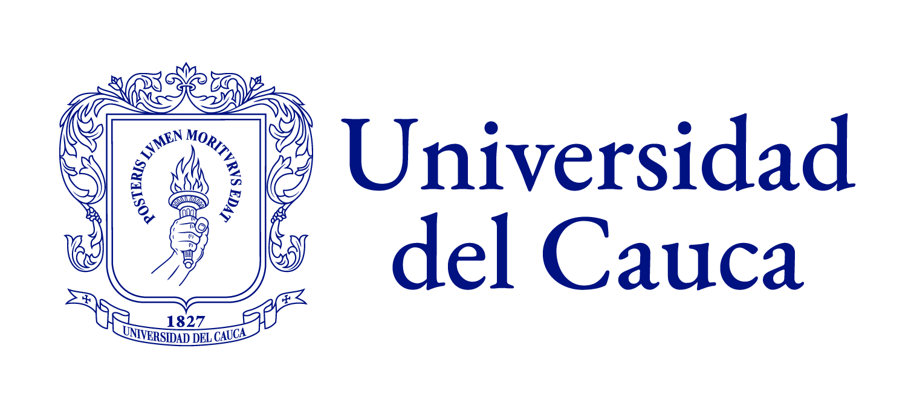
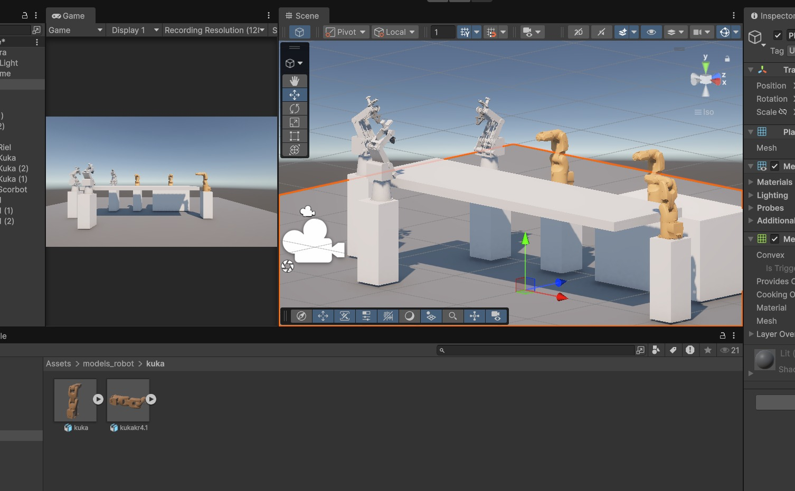

Simulación y planificación
- Modelo KR70 R2100 y herramientas de descripción.
- Gazebo Fortress, MoveIt2 y control de trayectorias.
- Interfaces
IgnitionSystemyGenericSystemde simulación.

ROBÓTICA · ROS 2 HUMBLEGUÍA ACADÉMICA DE INTEGRACIÓN ROBÓTICA
Arquitectura de comunicación entre una interfaz Unity, ROS 2 Humble y controladores KUKA: fundamentos, trazabilidad del software y ruta de validación experimental.

Hoy, comprender y simular. Después, validar un robot real y ampliar a la celda. Esta página es un recurso educativo; sus controles no se conectan a equipos.
3 KUKA · 3 SCORBOT · 1 BANDARECORRIDO EXPLICADO
Un recorrido por la página para repasar la arquitectura, los conceptos y los ejemplos de comunicación. Puedes detenerte en cualquier punto y volver después a los diagramas o al glosario.
Versión editada a 1,2× respecto a la grabación original. Usa los controles para reproducir, pausar, avanzar, ajustar el volumen o ver en pantalla completa.
Consulta esta tabla cuando una sigla interrumpa la lectura. Las definiciones explican el concepto; la columna «En esta celda» lo relaciona con el diseño propuesto y el repositorio revisado.
ROS 2 conecta los componentes. MoveIt 2 planifica movimiento. Gazebo simula el robot. Cumplen funciones diferentes.
48 conceptos disponibles
| Concepto | Qué significa | En esta celda | Para aprender más |
|---|---|---|---|
| ROS 2ROS 2 y archivos | Conjunto de bibliotecas y herramientas para construir aplicaciones robóticas mediante componentes que intercambian datos. No es el sistema operativo del controlador KUKA. | Conecta los procesos de la aplicación: puente, planificación, control y lectura del estado. | Documentación de ROS 2 |
| ROS 2 HumbleROS 2 y archivos | Distribución de ROS 2: una combinación versionada de paquetes y herramientas. La base acordada de esta guía es Humble con Ubuntu 22.04. | Elegir ramas, dependencias y documentación Humble; no mezclar instrucciones de otras distribuciones sin revisar compatibilidad. | Documentación de ROS 2 Humble |
| NodoROS 2 y archivos | Participante del grafo ROS 2 que realiza una función y se comunica con otros nodos. Varios nodos pueden compartir un proceso o estar en equipos diferentes. | Ejemplos: robot_state_publisher, move_group y el servidor de tareas. | Documentación de Nodo |
| TópicoROS 2 y archivos | Canal con nombre por el que se publican y reciben mensajes. Se usa habitualmente para flujos continuos de datos. | El estado articular puede publicarse en /arm_1/joint_states. | Documentación de Tópico |
| Mensaje / .msgROS 2 y archivos | Definición de los campos y tipos de un dato ROS. El mensaje es la estructura del dato; el tópico es el canal por el que puede circular. | JointState y Joints.msg tienen contratos distintos. Un Action.msg publicado en un tópico no invoca automáticamente una acción. | Documentación de Mensaje / .msg |
| Servicio / .srvROS 2 y archivos | Intercambio de solicitud y respuesta, pensado para operaciones que terminan pronto. | Consultar o configurar una función no exige usar el mismo mecanismo que una tarea de movimiento larga. | Documentación de Servicio / .srv |
| Acción / .actionROS 2 y archivos | Contrato para tareas de mayor duración: envía un objetivo, puede devolver progreso y termina con un resultado. Incluye mecanismos de cancelación. | /Move es una acción personalizada. Deben distinguirse objetivo aceptado, ejecución terminada y fallo. | Documentación de Acción / .action |
| ParámetroROS 2 y archivos | Valor de configuración asociado a un nodo. Cambia ajustes del proceso; no es un canal de mensajes de movimiento. | use_sim_time es un parámetro. Su valor debe ser coherente con el reloj del backend. | Documentación de Parámetro |
| Paquete ROSROS 2 y archivos | Unidad que agrupa código, interfaces, configuración y metadatos de una funcionalidad. | kuka_gazebo, control_actions y control_scripts son paquetes con responsabilidades diferentes. | Documentación de Paquete ROS |
| Workspace, overlay y colconROS 2 y archivos | El workspace organiza los paquetes. colcon los compila; cargar install/setup.bash incorpora ese overlay al entorno de la terminal. | Los nodos y RosBridge deben poder encontrar la misma versión compilada de control_actions. | Documentación de Workspace, overlay y colcon |
| Launch / .launch.pyROS 2 y archivos | Archivo que organiza el arranque de nodos, sus argumentos, parámetros y relaciones de inicio. No es una trayectoria. | multi_kuka_bringup.launch.py incluye el bringup por cada instancia definida en robot_list. | Documentación de Launch / .launch.py |
| YAML / YMLROS 2 y archivos | Formato de datos usado para escribir configuraciones legibles. YAML y YML son extensiones del mismo formato; el papel lo decide quien lee el archivo. | Un YAML configura controladores y otro configura MoveIt. No todos son programas de movimiento ni se cargan solos. | Documentación de YAML / YML |
| DDSComunicación y red | Data Distribution Service: tecnología de comunicación distribuida que usa el middleware habitual de ROS 2 para descubrir participantes e intercambiar datos. | Permite que nodos compatibles se encuentren; no sustituye el protocolo externo del controlador KUKA. | Documentación de DDS |
| RMWComunicación y red | Capa de abstracción entre las bibliotecas de ROS 2 y una implementación de middleware. No es otro nombre para RosBridge. | La implementación y su configuración influyen en descubrimiento y transporte. Hay que comprobarlas al diagnosticar comunicaciones. | Documentación de RMW |
| ROS_DOMAIN_IDComunicación y red | Identificador que separa dominios de descubrimiento DDS. En condiciones normales, nodos en dominios diferentes no se descubren directamente. | Dominio 30 es sólo el ejemplo de esta guía. Cambiarlo no cambia la IP de KUKA ni libera un puerto WebSocket ocupado. | Documentación de ROS_DOMAIN_ID |
| NamespaceComunicación y red | Prefijo que organiza nombres de nodos, tópicos, servicios y acciones dentro del grafo. No cambia automáticamente un nombre absoluto escrito en el código. | /arm_1 y /arm_3 separan rutas si toda la cadena respeta esos nombres. El /Move absoluto del repositorio exige revisión. | Documentación de Namespace |
| RemappingComunicación y red | Regla que cambia el nombre de una interfaz ROS al iniciar un nodo. Es un ajuste de nombres, no un puente entre dominios. | Puede ayudar a dirigir una ruta, pero debe revisarse junto con los nodos internos, los namespaces y los clientes. | Documentación de Remapping |
| IP y subredComunicación y red | La dirección IP identifica una interfaz de red. La subred define qué direcciones se consideran locales según una máscara. | PC y controladores requieren direcciones propias y conectividad. El laboratorio supone una red /24 sin router; no describe todas las redes posibles. | Documentación de IP y subred |
| PuertoComunicación y red | Número que ayuda a identificar un extremo de comunicación de una aplicación o protocolo en un equipo. No equivale a un namespace ni a un dominio DDS. | 9090 es el puerto WebSocket ilustrativo. Los puertos del driver KUKA se definen por separado. | Documentación de Puerto |
| QoSComunicación y red | Quality of Service: políticas de entrega, fiabilidad, historial y otros comportamientos de comunicación. Emisor y receptor necesitan ajustes compatibles. | Un mismo nombre de tópico y dominio no garantizan recepción si las políticas QoS son incompatibles. | Documentación de QoS |
| RosBridgeComunicación y red | Puente que expone interfaces ROS mediante un protocolo basado en JSON y transportes como WebSocket. No reemplaza el driver de hardware. | Permite que un cliente Unity intercambie datos con ROS 2. El soporte de acciones debe comprobarse en las versiones elegidas. | Documentación de RosBridge |
| WebSocketComunicación y red | Protocolo para mantener una comunicación bidireccional entre cliente y servidor sobre una conexión. Es el transporte, no la definición de una tarea robótica. | Unity puede usar ws://IP_DEL_PC:9090 para llegar a RosBridge; ese enlace no constituye el ciclo industrial del robot. | Documentación de WebSocket |
| JSONComunicación y red | Formato de texto para intercambiar datos estructurados: campos, números, listas y objetos. Por sí solo no especifica unidades ni cómo mover un brazo. | RosBridge interpreta operaciones y datos JSON conforme a su protocolo y a los tipos ROS disponibles. | Documentación de JSON |
| ROS# / cliente C#Comunicación y red | Biblioteca y herramientas de Siemens para integrar aplicaciones .NET o Unity con ROS, incluyendo cliente de puente y generación de mensajes. | Revisar la versión usada y generar tipos compatibles con ROS 2 y con las interfaces personalizadas del proyecto. | Documentación de ROS# / cliente C# |
| UnityModelos y simulación | Motor y entorno de desarrollo para escenas 3D e interfaces interactivas. Una escena visual no es, por sí sola, una conexión física. | Contiene la interfaz actual de la celda y sus modelos. Debe separar el objetivo solicitado del estado que devuelve el robot. | Documentación de Unity |
| Gazebo Fortress / IgnitionModelos y simulación | Simulador de robótica con mundo físico virtual. Fortress pertenece a la generación que también se denominó Ignition Gazebo. | Es el backend de simulación del repositorio KUKA revisado, combinado allí con ROS 2 Humble. Mover un modelo no acredita ejecución real. | Documentación de Gazebo Fortress / Ignition |
| RVizModelos y simulación | Herramienta de visualización de datos ROS: modelos, referencias, estados y resultados de planificación. No equivale a un simulador de dinámica. | Puede mostrar el robot y ayudar a inspeccionar la planificación de MoveIt; Gazebo cumple otro papel. | Documentación de RViz |
| URDF y XacroModelos y simulación | URDF describe eslabones y articulaciones del robot. Xacro permite generar esa descripción mediante macros y parámetros. | Revisar nombres, geometría, límites y configuración ros2_control. El archivo de descripción no crea el driver físico. | Documentación de URDF y Xacro |
| SRDF y grupo de planificaciónModelos y simulación | SRDF complementa el modelo con información semántica, como grupos de articulaciones y configuraciones. MoveIt planifica para un grupo definido. | El grupo del brazo, su herramienta y las reglas de colisión deben corresponder al modelo y a la celda. | Documentación de SRDF y grupo de planificación |
| TF / marco de referencia / TCPModelos y simulación | Un marco define desde dónde se expresa una posición u orientación; TF relaciona marcos. El TCP es el punto de referencia de la herramienta. | Una pose debe indicar la base y herramienta usadas. Un namespace no prefija automáticamente los frame_id. | Documentación de TF / marco de referencia / TCP |
| Pose, Euler y cuaterniónModelos y simulación | Una pose combina posición y orientación. Euler usa tres ángulos; un cuaternión representa la orientación con cuatro componentes. Las convenciones y unidades importan. | Unity y el adaptador deben acordar ejes, unidades y marco. MoveRP recibe ángulos en grados; los mensajes ROS habituales usan convenciones diferentes. | Documentación de Pose, Euler y cuaternión |
| Reloj simulado / use_sim_timeModelos y simulación | Un nodo puede usar el tiempo de simulación publicado en /clock en lugar del reloj normal. Todos los procesos implicados deben ser coherentes. | El bringup revisado fija este parámetro en algunos nodos. Pasar a hardware requiere revisar esa configuración y las marcas de tiempo. | Documentación de Reloj simulado / use_sim_time |
| Mock / GenericSystemModelos y simulación | Componente de prueba que imita interfaces de hardware, normalmente con comportamiento ideal. No mide ni acciona un robot físico. | Sirve para revisar la cadena de software sin hardware; no sustituye las pruebas con el controlador real. | Documentación de Mock / GenericSystem |
| MoveIt 2Planificación y control | Conjunto de herramientas para planificación de movimiento y manipulación en ROS 2. Es MoveIt 2, no “Move2”, y no es la capa de comunicación DDS. | Puede calcular y ejecutar un plan mediante controladores compatibles. No habla automáticamente con cualquier controlador KUKA. | Documentación de MoveIt 2 |
| Cinemática directa e inversaPlanificación y control | La directa calcula la pose a partir de las articulaciones. La inversa busca valores articulares que permitan alcanzar una pose. | Una solución cinemática no garantiza por sí sola un recorrido libre de colisiones o ejecutable. | Documentación de Cinemática directa e inversa |
| Plan, camino y trayectoriaPlanificación y control | El camino describe por dónde pasar. La trayectoria añade la evolución temporal, por ejemplo posiciones articulares en instantes concretos. | Un controlador necesita consignas compatibles y tiempos. Un objetivo cartesiano no es todavía una trayectoria articular. | Documentación de Plan, camino y trayectoria |
| ros2_controlPlanificación y control | Marco que conecta algoritmos de control con interfaces de hardware o simulación, separando controladores y componentes de acceso al equipo. | En el repositorio se conecta a simulación o mock. Para hardware debe existir una interfaz compatible con el driver elegido. | Documentación de ros2_control |
| controller_managerPlanificación y control | Componente que gestiona controladores y acceso a las interfaces de hardware. Su ciclo lee estado, actualiza control y escribe consignas. | Permite comprobar qué controladores están cargados o activos. Su frecuencia no debe confundirse con los FPS de Unity. | Documentación de controller_manager |
| JointTrajectoryControllerPlanificación y control | Controlador que sigue trayectorias articulares con puntos definidos en el tiempo. No es un planificador de movimiento cartesiano. | kuka_arm_controller usa este tipo en el YAML revisado. Las articulaciones e interfaces deben coincidir con el backend. | Documentación de JointTrajectoryController |
| FollowJointTrajectoryPlanificación y control | Acción estándar para solicitar la ejecución de una trayectoria articular y recibir resultado y seguimiento. Es diferente de la acción personalizada Move. | moveit_controllers.yaml conecta MoveIt con el endpoint follow_joint_trajectory del controlador. | Documentación de FollowJointTrajectory |
| JointState y broadcasterPlanificación y control | JointState contiene nombres y valores articulares con una marca temporal. El broadcaster publica el estado disponible en ros2_control. | Unity debe asociar cada nombre con su valor y distinguir datos simulados de mediciones reales. | Documentación de JointState y broadcaster |
| Move, MoveJ, MoveL y MoveRPPlanificación y control | Contrato y operaciones particulares de este repositorio: MoveJ usa objetivos articulares; MoveL, desplazamiento cartesiano; MoveRP, pose objetivo. No son una API universal de KUKA. | Conservar las unidades y semánticas del código. El apartado Archivos y mensajes explica sus campos y diferencias. | Documentación de Move, MoveJ, MoveL y MoveRP |
| PTP y LIN / PilzPlanificación y control | Modos de planificación industrial: PTP conecta configuraciones; LIN busca un desplazamiento rectilíneo del efector en el espacio cartesiano, sujeto a restricciones. | El código selecciona PTP para MoveJ/MoveRP y LIN para MoveL. Pedir una pose no implica automáticamente una línea recta. | Documentación de PTP y LIN / Pilz |
| Driver de hardwareHardware KUKA | Software que adapta consignas y lecturas ROS a una interfaz concreta del controlador físico. La compatibilidad depende del equipo y sus opciones. | Es la pieza que falta incorporar en el repositorio de simulación; no se obtiene sólo cambiando una IP. | Documentación de Driver de hardware |
| Controlador KUKA y familia de sistemaHardware KUKA | Equipo que gobierna el brazo y ejecuta su software. KSS, Sunrise e iiQKA.OS2 son familias de sistema con interfaces y requisitos diferentes. | Identificar controlador, versión y opciones antes de escoger una ruta de comunicación; no deducirlos del modelo visual. | Documentación de Controlador KUKA y familia de sistema |
| RSIHardware KUKA | Robot Sensor Interface: opción KUKA para intercambio cíclico con una aplicación externa. Requiere una combinación admitida de controlador, versión y configuración. | Es una ruta posible para ciertos equipos; su ciclo se prepara en el driver, no en cada frame de Unity. | Documentación de RSI |
| EKI y mxAutomationHardware KUKA | Interfaces KUKA que, en ciertas variantes del driver revisado, participan en la gestión del arranque y estado junto con RSI. No son sustitutos universales del intercambio cíclico. | Elegir la combinación documentada para el controlador, sus opciones y el modo de operación. | Documentación de EKI y mxAutomation |
| FRI / SunriseHardware KUKA | Fast Robot Interface: interfaz externa utilizada en rutas de integración de robots LBR con Sunrise, con sus propios requisitos y versiones. | Es otra familia de integración. No copiar automáticamente una configuración RSI de KSS a un sistema Sunrise. | Documentación de FRI / Sunrise |
No hay coincidencias. Prueba otra palabra o selecciona «Mostrar todos».
01 · ARQUITECTURA Y TRAZABILIDAD DEL SOFTWARE
Las vistas sencilla y técnica describen una propuesta de integración. La tercera reconstruye el repositorio de simulación a partir de archivos y líneas de código.
Unity pide un movimiento. ROS2 lo organiza. El driver habla con KUKA. La posición medida regresa por la misma cadena.
RosBridge, adaptador, planificación, ros2_control y driver: cada capa tiene una responsabilidad. La ruta MoveIt es una propuesta; la interfaz KUKA debe confirmarse.
Diagrama del repositorio REZ3LIET/KUKA-ROS2 en la revisión 8f2c2a35. Selecciona un componente para consultar sus fuentes. El driver físico y la conexión Unity aún no forman parte de ese repositorio.
02 · EL PUNTO DE PARTIDA REAL
Se revisó REZ3LIET/KUKA-ROS2 en el commit 8f2c2a35. Su README declara que no contiene integración con hardware real.
IgnitionSystem y GenericSystem de simulación.El modelo de la escena Unity no acredita qué controlador o versión tienen los robots físicos.
El launch crea el nodo de órdenes sin namespace y el servidor usa el nombre absoluto /Move. Antes de replicarlo, hay que revisar esa ruta completa. Crear varias instancias visuales no demuestra que las órdenes estén aisladas.
03 · BASE TÉCNICA Y CONTROLADOR
Para este proyecto, la base solicitada es Ubuntu 22.04 y ROS2 Humble. Conserva ramas, paquetes y mensajes compatibles con esa distribución.
Unity puede estar en otro equipo y usar WebSocket. El ciclo industrial pertenece al driver; no debe depender de los FPS del editor.
En las configuraciones RSI documentadas, RSI atiende el intercambio cíclico. Los wrappers EKI o mxAutomation pueden gestionar arranque y estado. No son opciones intercambiables para todos los equipos.
04 · ARCHIVOS, MENSAJES Y COMANDOS
Una guía de estudio reproducible sobre el código, no una instalación ensayada. Revisión fija 8f2c2a35; no se han compilado paquetes ni ejecutado comandos sobre robots.
Identificar qué inicia cada proceso, qué configura el control y qué contrato debe respetar Unity. Se separan tres niveles: solicitud de tarea —acción ROS—, trayectoria articular —controlador— y comunicación industrial —driver y controlador KUKA—. El repositorio cubre una ruta de simulación; la integración física exige completar y validar el tercer nivel.
| Archivo / grupo | Función observada | Qué revisar o adaptar |
|---|---|---|
Orquestación de la celdakuka_gazebo/launch/multi_kuka_bringup.launch.py ↗ | robot_list, robot_name, namespace, posición y herramienta. Abre un Gazebo e incluye el bringup por instancia. La lista activa contiene arm_1 y arm_3; no representa por sí sola tres KUKA. | Ajustar la lista y comprobar aislamiento de todas las rutas, no sólo el nombre del modelo. |
Arranque de cada instanciakuka_gazebo/launch/kuka_bringup.launch.py ↗ | Carga Xacro y YAML; inicia robot_state_publisher, spawn, controladores, move_group y move_robot. Selecciona variantes con o sin pinza. | Propagar namespace y reloj a los nodos de órdenes; MoveInterface carece de namespace y fija use_sim_time=True. |
Controlador de articulacioneskuka_gazebo/config/kuka_controllers.yaml ↗También: moveit/kuka_moveit/config/ros2_controllers.yaml | JointTrajectoryController, joint_state_broadcaster, joint_1…joint_6, interfaz de posición y estados posición/velocidad. update_rate=100 pertenece a esta configuración de simulación. | Nombres y orden deben coincidir con URDF y driver. No trasladar los 100 Hz al ciclo RSI sin documentación. |
Enlace MoveIt → controladormoveit/kuka_moveit/config/moveit_controllers.yaml ↗ | kuka_arm_controller, tipo FollowJointTrajectory y action_ns: follow_joint_trajectory. Indica a MoveIt dónde ejecutar el plan. | Alinear namespace, nombre del controlador y action endpoint con los que realmente publica ros2_control. |
Cinemática y restriccionesmoveit/kuka_moveit/config/kinematics.yaml ↗ | Junto con joint_limits.yaml, pilz_cartesian_limits.yaml, ompl_planning.yaml y kr70_r2100.srdf define cinemática, límites, grupos y planificación. | Revisar modelo, base, TCP, colisiones y límites del equipo. Las variantes 2f85 y 2f140 tienen sus propios directorios. |
Backend de controlkuka_description/urdf/kr70_r2100_ros2_control.xacro ↗ | Declara ign_ros2_control/IgnitionSystem. El Xacro de MoveIt utiliza un sistema mock. Ninguno implementa el protocolo de un KUKA real. | Para hardware se necesita la descripción y configuración del driver compatible; cambiar un texto de plugin no completa la integración. |
Servidor y contratokuka_control/control_scripts/src/move_robot.cpp ↗ | Servidor /Move, selección de MoveJ/MoveL/MoveRP/MoveG, planificación y ejecución. CMakeLists.txt genera el ejecutable move_robot. | Revisar nombre absoluto /Move, contexto MoveGroup, concurrencia, cancelación y estados de resultado. Falta documentar/proveer move_group_interface_improved.h. |
Cliente de ejemplokuka_control/control_scripts/scripts/action_helper.py ↗ | Construye Move.Goal, espera el servidor y envía una secuencia. action_execution.py contiene además un lector genérico de programas YAML. | El main de action_execution.py usa una secuencia embebida: el lector YAML no se invoca allí. No asumir que existe un programa de celda configurable ya listo. |
CONTRATO DE MOVIMIENTO
control_actions/action/Move es una acción ROS 2 personalizada. Action.msg agrupa campos, pero no sustituye la acción ni implica un tópico publicado. Definir feedback en el archivo tampoco demuestra que se publique periódicamente.
Recibe seis ángulos en grados, verifica límites propios del código y convierte a radianes. Usa planificación Pilz PTP. Es un objetivo articular, no una secuencia de muestras.
Suma x,y,z a la posición actual y conserva orientación. En la ruta MoveIt se trabaja en metros. Selecciona LIN; importa verificar el marco de referencia.
El código asigna posición absoluta y convierte yaw, pitch y roll en grados a un cuaternión. Usa PTP: no garantiza una línea recta. El comentario “relative rotation” no describe la asignación final.
MoveG acciona una pinza configurada; no corresponde a los ejes del brazo. speed se aplica como factor de escala de velocidad de MoveIt, no como velocidad cartesiana en m/s. Los límites y nombres del KR70 del ejemplo deben revisarse para el equipo real.
SECUENCIA DE ESTUDIO
Los bloques son documentación para una terminal Ubuntu 22.04 con ROS 2 Humble. Esta página sólo copia texto. El arranque y las acciones del ejemplo se estudian en simulación; no equivalen a una puesta en marcha física.
Propuesta a implementar y probar; no es un parche completo del repositorio. En move_robot.cpp, hacer relativo "/Move" → "Move" o parametrizar el endpoint. En el launch, añadir namespace=namespace_val a MoveInterface y propagar el reloj. Revisar también los nodos creados dentro de C++ y su contexto MoveGroup: cambiar sólo el servidor no resuelve toda la cadena.
# Fragmento orientativo de Node(...) en kuka_bringup.launch.py
namespace=namespace_val,
parameters=[..., {"use_sim_time": use_sim_time}, ...]
# Resultado esperado tras completar la adaptación:
/arm_1/Move /arm_3/Move
# Verificar con ros2 action list -t; no asumirlo por el namespace.Si cambia Move.action o un .msg, recompilar control_actions y sus dependientes, cargar el overlay en cada terminal, regenerar los tipos C# usados por Unity y confirmar la compatibilidad del cliente RosBridge con acciones ROS 2. Una alternativa es un adaptador ROS 2 con una API explícita de tarea y estado; sería desarrollo nuevo.
Un objetivo de Unity debe producir una solicitud identificable, un plan válido, una trayectoria aceptada y un estado medido de retorno. El adaptador de hardware ejecuta el intercambio requerido por RSI, FRI u otra interfaz compatible. RosBridge no transmite directamente consignas a los motores. Antes de integrar la celda se comprueba una sola cadena completa con el driver elegido, habilitación del controlador y supervisión del laboratorio.
Referencia de planificación: Pilz Industrial Motion Planner: PTP, LIN y CIRC. Interfaces estándar: FollowJointTrajectory y JointState. Una aceptación de acción no demuestra por sí sola un movimiento finalizado; revisar además resultado, fallo y cancelación.
05 · PRÁCTICA DE COMUNICACIÓN
Cambia el dominio de un proceso, repite una dirección o apaga el puente. Observa qué parte del recorrido deja de tener sentido.
Las IP, el dominio 30 y los nombres son ilustrativos. Los puertos físicos y las opciones KUKA dependen del driver que finalmente se seleccione.
La IP identifica una interfaz de red. El dominio organiza el descubrimiento DDS entre procesos ROS2. El controlador KUKA no recibe un Domain ID como ajuste de Ethernet.
Es posible compartir un dominio y separar nombres por robot. Los namespaces no resuelven automáticamente los puertos ocupados ni prefijan los identificadores de TF.
Si cada driver está en otro dominio, no se comunica directamente con el coordinador. Hace falta un puente deliberado, por ejemplo una instancia de RosBridge por dominio.
06 · RUTA DE VALIDACIÓN
Cada etapa responde una pregunta distinta. La barra sirve para preparar el trabajo: marcar una casilla no certifica que una prueba se haya realizado.
07 · PREGUNTAS FRECUENTES
El simulador demuestra un recorrido virtual. Para el equipo real hace falta una interfaz compatible, configuración del controlador y validación de órdenes y estados medidos. Un joint_states simulado no acredita lectura de encoders.
No. El repositorio revisado usa backends de simulación. La IP sólo identifica dónde comunicarse; no crea el driver ni instala opciones de control externo en el KUKA.
No necesariamente. Con un dominio DDS compartido y nombres separados, un servidor puede exponer varios robots. Con dominios aislados suele necesitarse un puente por dominio u otra pasarela explícita. Esa decisión no elimina la configuración de sockets del driver.
Pueden compartir un contrato de tareas a alto nivel, pero cada equipo necesita su adaptador, unidades, estados y protocolo. La coordinación de la celda añade referencias comunes, dependencias y gestión de zonas compartidas.
No debe suponerse. La API ROS, el planificador y el protocolo del controlador son capas diferentes. Puede calcularse una trayectoria articular desde un objetivo cartesiano, o utilizarse una capacidad específica del controlador si existe y está documentada.
Compartir dominio es normal si deben comunicarse. Hay que comprobar nombres, instancias y endpoints. Un conflicto de un puerto de aplicación se resuelve en esa configuración; cambiar el Domain ID no libera ese puerto.
08 · FUENTES Y CONTEXTO
Documentación primaria consultada el 12 de noviembre de 2026. Los diagramas son una propuesta educativa; la versión y opciones de los equipos de Chile siguen por identificar.
REZ3LIET/KUKA-ROS2 · commit fijado
Kroshu · requisitos y correspondencia de distribuciones
iiQKA.OS2 y frontera con soporte comunitario
Documentación de ROS2 Humble
Interfaz JSON, tópicos, servicios y WebSocket
Cliente y generación de mensajes; comprobar versión usada
Carpeta de documentos compartida por el autor para ampliar el contexto. El acceso depende de sus permisos de Drive; no se han verificado sus documentos en esta edición.
Unity y ROS 2 para UR3e y UR5e · antecedente de integración y comunicación multi-robot.